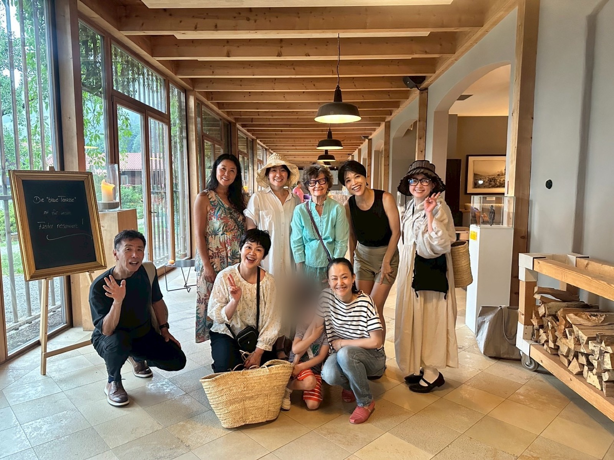

専門家コースを
受講してくださったみなさんへ
受講してくださったみなさんへ
挑戦を続けるための
場所を、つくりました。
専門家コースの続きに
３つの場所を準備しました。
10月から始めます。
３つの場所を準備しました。
10月から始めます。
2026年 独ビオホテル・タナホフツアーにて受講生と
オーガニックを仕事にしたい人と話していると、ほとんど同じ言葉を聞きます。
「やりたいことは、あるんです」
そのあとに、たいてい「でも」が続きます。でも時間がない。でも自信がない。でもまだ準備が足りない。
私は長いあいだ、この「でも」は知識で埋まると思っていました。もっと学べば、自信がついて動けるようになる、と。
でもね、自分の中にもあるんですが、たくさん学んだ人でも、止まってしまう時がある。
やる気がないわけじゃないんです。夜、机に向かって、書きかけて、「もう少し調べてからにしよう」と閉じる。値段を決めかけて、「私なんかがこの金額でいいのかな」と手が止まる。気づくと、また同じ場所にいる。
そして、止まっても、誰にも気づかれません。誰も「どうしたの?」と聞いてこない。そのまま静かに、止まっていられてしまう。
だから、私が用意したのは、挑戦し続けるための場所。
大きな成功を約束する話ではなくて、「止まらなくなる」という話です。私は、ここがいちばん難しいと思っています。そして逆に、続けているものには、どこかでチャンスが訪れる。これも、私自身が経験してきたことです。
ひとつでも当てはまった方に、このあとの話を読んでほしいです。
本を読んだ。講座を受けた。ノートに書き出した。アカウントをつくった。カレンダーに「やる日」を入れた。朝早く起きてみた。
どれも間違っていません。実際、それで進んだ部分もあるはずです。オーガニックの知識だって、ちゃんと積み上げてこられた。
それでも、途中で止まった。もう一度始めては、また止まった。
私も同じです。挑戦ができない時期が長く続いてきました。
新しいことを始めるときは、とにかくパワーが要ります。値段を決める。人に見せる。「これ、やります」と口に出す。どれも、頭ではわかっていることばかりです。わかっているのに、手が止まる。
反対に、横に誰かいるだけで、拍子抜けするくらい進みます。次の1ヶ月にやることを人の前で言うと、動きます。うまくいかなかった話を聞いてくれる人がいると、もう一度試せます。
足りていなかったのは情報じゃなくて、環境のほうでした。

その反対側まで行った人の話を、ひとつさせてください。
受講生のゆうきちゃんです。ピラティスの講師をしながら、フルオーガニックの酵素ドリンク「Natural FLORA」をつくって販売しています。この商品を置いてくれるお店は、いまでは40店舗以上。取引先を、ゼロから自分で広げてきました。
はじめは、オーガニックの知識もゼロだったそうです。学び直して、商品をつくって、売り先を探して、いまがあります。
私が何度も見返しているのは、後半のほうです。商品ができても、話せる相手がいない。値段のこと、原料のこと、伝え方のこと、相談できる人がいない。その状態で一人で続けるのは、正直しんどい。
ゆうきちゃんの取引先は、IOBのリーダーズラウンジ（グルコン）で広がったご縁からつながっていきました。学んだ知識が売れたのではなくて、その場にいたから次の一歩が出た。私はそこを見ています。
学んだあとに、挑戦を続ける場所がそもそもありませんでした。コースが終わったら、あとはそれぞれの場所で一人ずつ。それで止まるのは、当たり前のことでした。
メールレッスン、共同学習会、リーダーズラウンジという名のグルコン。この3つを、挑戦を続けるためのひとつの環境として組み直しました。メールレッスンだけでも始められて、共同学習会、リーダーズラウンジと、必要な分だけ足していけます。全員が10月に、新しいグループで一緒にスタートします。
今回は、モニター価格で募集します。定員はありませんが、少人数になると思います。モニターの条件は、アンケートと取材へのご協力だけです。
用意した環境は、この3つのサービスでできています。
専門家コースの続きに、3つの場所を用意しました。今、欲しいものに合わせて選んでください。
下のプランほど、上のプランの内容をすべて含みます

お支払いはユーロ建てです。
3つの場所、全部の土台になっているサービスです。毎日届く1通の中身を、詳しくご紹介します。
毎日届くもの
テキストと、5〜10分のオーガニック専門家コースのショート動画が1本。通勤や家事のすきま時間で見られる長さです。
扱うテーマの一部
有機農業の原理／認証のしくみ／栄養素／疾病予防／遺伝子組み換え・ゲノム編集／環境／SDGs／エシカルな生産と消費／世界のオーガニック統計データ／学校給食ムーブメント など
年に数回、期間を区切って「書いて出す」時間があります。その日のメールの問いへの自分の答えをBANDに投稿し、ほかの受講生の投稿も読める。ここが、読むだけで終わらせない仕組みです。
資格試験を受けたい方には、日々のメールに紐づくクイズが、そのまま対策になります。
Startup Circle と Leaders Lounge に入っている「共同学習会」の話です。自分の事業の柱を組み立てるための、月1回・90分・少人数のオンライン学習会で、12ヶ月で12のテーマを回ります。
きれいにまとまってから持ってくる必要はありません。というより、まとまらないから持ってくる場所です。
Startup Circle（共同学習会）に参加した人が、この場で何が動いたか。実際の声です。
何を、誰に、いくらで。一人だと止まってしまうことが、仲間の前で言葉にすると動き出します。
Leaders Lounge に入っている「リーダーズラウンジ」、通称グルコンの話です。月1回・少人数のグループコンサルで、この3つを回します。
去年12月の回を最後にいったん止めていて、10月から新しいグループとして再開します。実際に参加した人が、この場をどう感じたか。このあとの声を読んでみてください。
去年12月のグループコンサルのあと、参加者にアンケートを取りました。「一言で表すと?」という質問への答えが、これです。
一人でやっていると、うまくいかない時期を自分の能力のせいにしがちです。実際は、みんな同じところで詰まっています。それが見えるだけで、次の月も続けられます。
| 銀行振込（日本・ドイツ） | 一括のみ |
|---|---|
| Stripe／PayPal （全プラン共通） | 一括、または3回までの分割払いが選べます |
Stripe・PayPalの決済リンクは、お申し込みフォーム送信後の自動返信メールでご案内します。
今回はモニター価格でのご案内です。お願いしたい条件は、アンケートと取材にご協力いただくこと、それだけです。
お名前の出し方（イニシャル／フルネーム）や、お顔出しの有無は、その際に改めて個別にお伺いします。今すぐ決めていただく必要はありませんので、ご安心ください。
申し込む前に試せるものを2つ用意しました。どちらも数分で終わります。気になったほうから、どうぞ。
確認のため、ご登録のメールアドレス宛に
自動返信メールをお送りしました。
お支払いのご案内が記載されていますので、
ご確認をお願いいたします。
10月に、一緒に始めましょう。
一人だと、続かない。
だから、仲間と続ける場所をつくりました。
10月に、一緒に始めましょう。